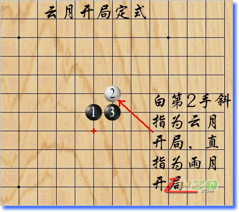
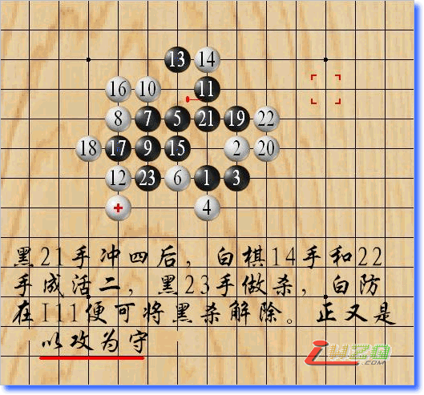

与初学五子的朋友说说云月开局
#1 与初学五子的朋友说说云月开局 作者：有志青年 发表时间：2007-12-26 18:16:05
初学五子的人，往往棋局上被人砍得体无无肤后，很想找到个现成的棋谱依葫芦画瓢，左手拿定式必胜棋谱，右手举棋子如挥刀，刷刷的砍杀下去， 不费神费力，还能杀个痛快。然而，如果说手里有了必胜谱就能所向披靡，天下无敌，怕是五子棋也就没了那些令人痴迷的魅力了。
那么，要不要学习必胜或是黑优开局呢？当然要，这是快速提高棋力的捷径，但在学习这些开局还是要动脑思考的，这个棋子为什么要下到这个点?它的作用是什么?为什么下到这里就是必胜点，走到那里就是废棋呢？如果能想清楚这些，那你的五子棋的学习就会事半功倍，很快就能提高自己的棋力。
我虽然喜欢五子棋，但还没到痴狂的地步，下棋四年多，有幸先后拜了四个师傅，却只专门学了一种定式开局，那就是云月。可惜，我也不是很爱动脑筋的人，不会去费神专门研究五子各种开局定式变化，所以我的棋力也不强，要不是被师傅逼着死记硬背这个开局N多变化，现在恐怕我还是那案板上的肉，任人宰割呢。
我当年为寻找师傅学习五子棋也历经艰辛，所以特别理解初学五子棋的朋友盼望能有人指点一二，我学的是云月定式，对这个开局了解得多一些，现在简单给初学者介绍一下，但愿能给五子新手们一点点帮助，如果我有说的不对的地方，欢迎大家批评指正。
白子第二手斜止为云月，直止为雨月，走法是一样的，所以云月定式也就包含了雨月定式。如图：

在我看来，这个开局简单易学，做棋点少，攻击力强，是黑大优的定式开局，但现在云月已经被很多人认定为这是除了花月和蒲月定式以外的另一个必胜开局。
其实每种定式都有成千上万种变化，人的精力和记忆力有限，很难将所有变化记全，学习定式也主要是为了学习它的攻防布局和算棋思路，把前人的经验应用到自己的实战中去，所以，把云月定式做为学习五子棋的基础，由其引申，触类旁通，逐渐学会把云月的攻防变化贯穿在其他定式开局之中，那么也就达到了快速提高棋力的目的了。
现在我把云月基本定式中白6手防的变化给大家简单介绍一下：
这里白棋4手防在H7是常见的八卦式防法，算是强防的一种了。白6手防在G8，黑进攻的方法有两种，旧式谱走法黑7手走在F9，如图
这里黑7手既防了白4和6手的活二，又与5手构成活二，5手与3手也是活二，黑明显处于优势，但白棋有一强防，如图
白棋这手防，阻断了黑后面的继续进攻，黑需不断做棋，取胜不易。所以这个7手已经很少有人用了。
新式走法如图：
细看一下这个7手，强就强在它进可攻退可守，白棋唯一的一个活二，被这个黑7手罩住，没有发展空间，正合了五子兵法中的“以攻为守”的道理，黑7手这一子两个活二，又有了很大的发展空间，所以，此点为必胜点。
后面白棋各防点的变化在棋谱上都有详细演示，我就不多说了，这里我要说一下很多棋谱上黑21手的一个漏洞。
我学棋是跟从师傅学的，看的棋谱不多，但看过几个网站的互动棋谱都发现存在这个漏洞，师傅说旧的五子棋谱书里也是这个样子的，如图：

各棋谱上白24手都是防在E7，因下面显然有杀，但白若防在I11，便可反杀，大家也可以试着摆一下。黑不得不去防，如果执白棋是个经验丰富的老手，便可趁机反攻，所以21手是不应该冲的，白在上面活三反杀，黑必须防在K9，看下图。
在对弈中往往一步走错，便会遭致惨败，所以，在下棋过程中，走出每步棋都要慎重考虑一下，这一子走出后，对方会如何应对，自己又应该怎样继续进攻，计算能力强的人会算到十步或二十步以上，计算能力弱一点的朋友至少也应该算到三步以内的攻防，棋下到这地步，就下出无穷的乐趣了。
正确走法如图：
以白防H10为例，看黑如何进
#2 Re:与初学五子的朋友说说云月开局 作者：古道东疯 发表时间：2007-12-26 19:22:35
慢慢消化 谢谢#3 Re:与初学五子的朋友说说云月开局 作者：古筝 发表时间：2010-8-3 12:17:45
第15手走的不好，导致你所谓的21手问题
15改放13左上角做活三，黑易胜
［ 掌棋宣传员 于 2010-8-4 16:39:03 时花20金币送鲜花一朵］